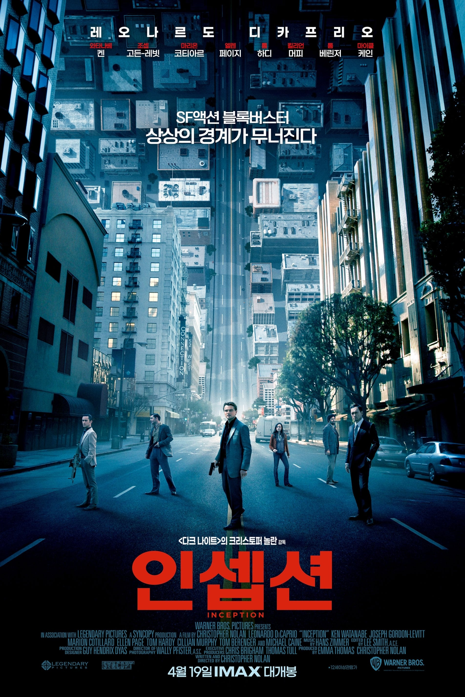
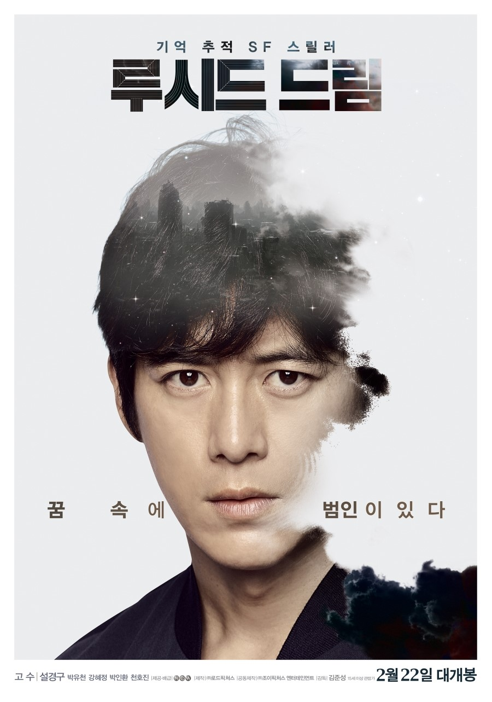

인셉션 (Inception, 2010)
인셉션 (Inception, 2010)
감독: 크리스토퍼 놀란
줄거리: 주인공 돔 코브는 '꿈 속에 들어가 사람들의 아이디어를 훔치는' 전문 도둑입니다. 하지만 이제는 그를 추적하는 이들이 많아지고, 자신의 가족을 다시 만날 수 있는 기회를 얻기 위해 한 마지막 작업을 맡게 됩니다. 그는 꿈 속에서 꿈을 꾸는 매우 복잡한 작업을 해야 하고, 이 과정에서 꿈과 현실의 경계가 점점 모호해지며 자각몽의 개념이 등장합니다.
자각몽의 요소: 영화의 핵심은 사람들이 꿈 속에서 자각몽을 경험하고 꿈을 조작할 수 있다는 점입니다. 꿈 속에서 또 다른 꿈을 꾸는 구조로, 꿈 안에서 꿈을 통제하거나 바꿀 수 있는 자각몽의 특징을 잘 보여줍니다.

루시드 드림 (Lucid Dream, 2017)
루시드 드림 (Lucid Dream, 2017)
감독: 김준석
줄거리: 이 영화는 주인공이 자신의 꿈 속에서 자각몽을 이용해 현실의 사건을 추적하는 이야기입니다. 주인공은 자신의 아들이 실종된 사건을 풀기 위해, 자각몽을 통해 꿈 속에서 중요한 단서를 찾아 나섭니다. 꿈을 제어할 수 있다는 점을 이용해 점차 사건을 풀어가며, 현실과 꿈의 경계를 넘나드는 긴장감 넘치는 이야기를 그립니다.
자각몽의 요소: 이 영화는 자각몽의 개념을 적극적으로 다룹니다. 주인공은 꿈 속에서 자신이 꿈을 꾸고 있다는 것을 인식하고, 그 꿈을 자유롭게 조작할 수 있다는 점에서 자각몽의 특징을 잘 보여줍니다.